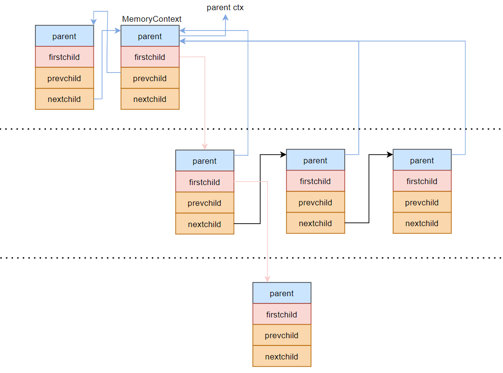

How to prevent memory leak is such an important topic for every C-language developer. After a long term run, the application eats every bit of RAM and runs so slowly that the OS needs a rebooting. Even worse sometime, the OS just throws a segment fault and shuts down the process immediately. Memory pool is a good fix for this, PostgreSQL has invited this feature after version 9 more or less. This reduced the raisk of memory leak.
PostgreSQL implements memory infrastructure as The Momory Context. Here are some api you may familiar with:
| API | For What |
|---|---|
| AllocSetContextCreateInternal/AllocSetContextCreate | create context |
| MemoryContextDelete | Destroy context |
| palloc | alloc memory from context |
| pfree | free memory back to context |
| prealloc | realloc memory |
Obviously, they would replace libc alloc/free functions. I will explain how Memory Context works in this post.
A tree like relationship
A memory context can specify:
- a parent context
- a child contexts list
If we got a bunch of contexts, it turns to this picture.

Every memory context
has a firstchild pointer to the first element of its child contexts list,
chains to neighbours with the help of the nextchild pointer and the prevchild pointer,
also has a parent pointer to its parent context if it has, set to NULL if it has not.
In postgreSQL the most top memory context node is TopMemContext, which’s parent is NULL, in other words it’s the root of this upside down tree like relationship.
Whenever a context is to be destroyed, the child contexts would be destroyed firstly by list order. And if any child context also has child contexts, that child contexts would be destroyed ahead. This process invokes Recursively until all child contexts under the root are destroyed, then the root context itself is destroyed.
- Post title：The memory context of PostgreSQL
- Post author：Alven Darthy
- Create time：2021-04-15 21:59:53
- Post link：http:/thinkindb.com/2021/04/15/The-memory-context-of-PostgreSQL/
- Copyright Notice：All articles in this blog are licensed under BY-NC-SA unless stating additionally.